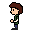

I'm a passionate game developer with a first class honours degree
in Computer Science for Games from the University of Brighton. I've been
building games since I was 10, starting with python on a Raspberry Pi,
moving into Minecraft modding at 12, and never really stopping since.
I've competed in multiple game jams and worked on projects ranging from
full-scale games like Loco-Comotives to experimental concepts
like my TypeScript traffic game. I'm also currently working on
Due Process, a commercially developed tactical shooter. Game development is, quite simply, what I love doing more than anything else, and my biggest goal is to make it my career.